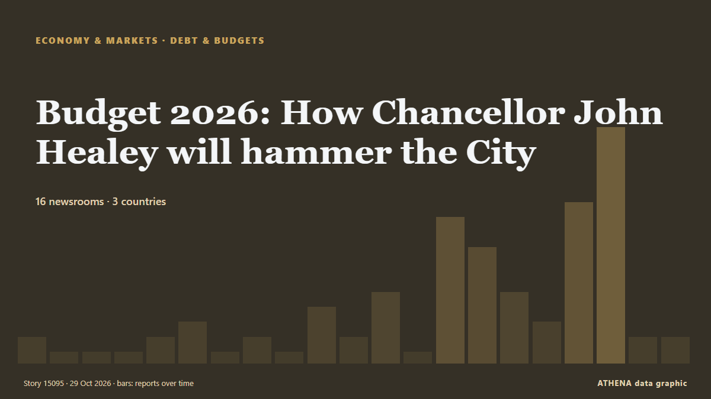

Budget 2026: How Chancellor John Healey will hammer the City

Chancellor has the Square Mile firmly in his sights in today’s Budget. von Evening Standard (London)
Unabhängig gemeldet von 16 Medien in 3 Ländern seit dem 19. Okt., zuerst von BBC Business; die Berichterstattung flaut ab. ATHENA stuft das Risiko als niedrig ein (1.3/10), vor allem wegen der Schwere des beschriebenen Schadens und der Qualität der Belege. Die Konfidenz liegt bei 74 % (hoch): 16 Medien bestätigen es unabhängig, bei einer mittleren Verlässlichkeit der Quellen von 70 %. Wer berichtete: 38 Medien in Vereinigtes Königreich · United Kingdom, 1 Medien in Belgien · Belgium, 1 Medien in Uruguay. Die Berichterstattung lief von 19. Okt. bis 28. Okt., über 215 Stunden.
Warum es wichtig ist: Wirtschafts- und Marktentwicklungen wirken sich auf Preise, Arbeitsplätze, Finanzierungskosten und Investitionen aus.
Was sich geändert hat: 13 neue Berichte von 9 Redaktionen in den 24 Stunden bis 29. Okt..
Erste Schlagzeile: Budget 2026: What time will Chancellor John Healey read his speech today?
Schlagzeilen werden auf Englisch angezeigt, wie veröffentlicht.
Auf einen Blick
Ausgewählt, bewertet und geschrieben nach der veröffentlichten Methodik von ATHENA. Kein Redakteur greift in einzelne Ereignisse ein. So entsteht ATHENA ›
| 19 Oct 09:01 UTC | 1 |
|---|---|
| 19 Oct 21:01 UTC | 0 |
| 20 Oct 09:01 UTC | 0 |
| 20 Oct 21:01 UTC | 0 |
| 21 Oct 09:01 UTC | 1 |
| 21 Oct 21:01 UTC | 2 |
| 22 Oct 09:01 UTC | 0 |
| 22 Oct 21:01 UTC | 1 |
| 23 Oct 09:01 UTC | 0 |
| 23 Oct 21:01 UTC | 3 |
| 24 Oct 09:01 UTC | 1 |
| 24 Oct 21:01 UTC | 4 |
| 25 Oct 09:01 UTC | 0 |
| 25 Oct 21:01 UTC | 9 |
| 26 Oct 09:01 UTC | 7 |
| 26 Oct 21:01 UTC | 4 |
| 27 Oct 09:01 UTC | 2 |
| 27 Oct 21:01 UTC | 10 |
| 28 Oct 09:01 UTC | 15 |
| 28 Oct 21:01 UTC | 1 |
| 29 Oct 09:01 UTC | 1 |
| 19 Oct 15:53 UTC | 0.0 |
|---|---|
| 22 Oct 07:08 UTC | 0.7 |
| 22 Oct 08:38 UTC | 1.2 |
| 26 Oct 10:17 UTC | 1.8 |
| 29 Oct 13:20 UTC | 1.3 |
Warum diese Zahlen
Bedeutung
Risiko
Konfidenz
Die Berichterstattung – wer berichtete, und wann
Schlagzeile wie veröffentlicht · öffnet das Original- BBC Business · Vereinigtes Königreich · United KingdomBudget 2026: Key points at a glance
- BBC Business · Vereinigtes Königreich · United KingdomFaisal Islam: Inflation and borrowing figures illustrate chancellor's Budget challenge
- The Guardian · Vereinigtes Königreich · United KingdomBarclays boss indicates bank taxes in budget ‘bearable’ and backs Healey – UK politics live
- Guardian Business · Vereinigtes Königreich · United KingdomYou be the chancellor: play our budget game to see if you can balance the books
- Politico Europe · Belgien · BelgiumWho really writes the budget?
- Guardian Business · Vereinigtes Königreich · United KingdomJohn Healey pledges to use budget to harness power of AI to bolster Britain’s security
- Guardian Business · Vereinigtes Königreich · United KingdomFive key tax talking points before next week’s budget
- Guardian Business · Vereinigtes Königreich · United KingdomCan curry nights and canny advisers help Healey deliver a budget for everyday people?
- The Guardian · Vereinigtes Königreich · United KingdomNorthern Olympics campaign to get £7m in Healey’s budget
- Guardian Business · Vereinigtes Königreich · United KingdomHealey’s first budget to include big devolution package to boost growth
- The Scotsman · Vereinigtes Königreich · United KingdomScottish business chiefs urge Chancellor to be 'bold' and cut taxes
- MercoPress · UruguayNext Wednesday, Chancellor Healey delivers the Budget statement, PM Burnham’s first
- The Scotsman · Vereinigtes Königreich · United KingdomBudget 2026: What will be in John Healey’s first Budget as Chancellor
- Yorkshire Post · Vereinigtes Königreich · United KingdomBudget 2026: farming groups hoping for inheritance tax U-turn by John Healey
- Yorkshire Post · Vereinigtes Königreich · United KingdomBudget 2026: inside John Healey's first fiscal statement as Chancellor
- Yorkshire Post · Vereinigtes Königreich · United KingdomBudget 2026: what powers will John Healey hand over to Yorkshire mayors?
- Bristol Post · Vereinigtes Königreich · United KingdomWhat is expected in Wednesday's Budget as 'rise ruled out'
- Evening Standard (London) · Vereinigtes Königreich · United KingdomBudget 2026: Chancellor John Healey's big London dilemma as he battles to fire up Britain
- WalesOnline · Vereinigtes Königreich · United KingdomBBC expert update on key State Pension £13,036 rule change on Wednesday
- Evening Standard (London) · Vereinigtes Königreich · United KingdomBudget 2026: What Chancellor must do to tackle London's housing crisis
- Birmingham Mail · Vereinigtes Königreich · United KingdomThree state pension announcements could be coming from John Healey on Wednesday
- Manchester Evening News · Vereinigtes Königreich · United KingdomTen things John Healey will announce in UK budget 2026 including tax announcements
- Birmingham Mail · Vereinigtes Königreich · United KingdomAndy Burnham and John Healey 'new cost-of-living payments' from Wednesday
- Evening Standard (London) · Vereinigtes Königreich · United KingdomWhen is the Budget 2026? Chancellor set to reveal major tax and spending changes
- Evening Standard (London) · Vereinigtes Königreich · United KingdomBudget 2026: What tax rises and spending pledges will Chancellor announce?
- WalesOnline · Vereinigtes Königreich · United Kingdom'Messy' personal tax allowance increase expected this week
- Bristol Post · Vereinigtes Königreich · United Kingdom'Christmas comes early' for Rolls-Royce and Babcock ahead of Budget
- Manchester Evening News · Vereinigtes Königreich · United KingdomNeed To Know: What to expect from Andy Burnham's first Budget as chancellor to make statement this week
- Birmingham Mail · Vereinigtes Königreich · United KingdomJohn Healey to announce wage rise for thousands of workers on Wednesday
- Evening Standard (London) · Vereinigtes Königreich · United KingdomBudget 2026: Chancellor promises Sadiq Khan 'radical devolution of power' to fire up London
- Birmingham Mail · Vereinigtes Königreich · United KingdomAndy Burnham and John Healey handing £1,980 to people earning under £27,000 from Wednesday
- Birmingham Mail · Vereinigtes Königreich · United KingdomJohn Healey 'considering' expanding tax from Wednesday with drivers at risk
- Guardian Business · Vereinigtes Königreich · United KingdomBudget 2026: six charts that reveal the economic realities facing the chancellor
- Liverpool Echo · Vereinigtes Königreich · United KingdomWho is Chancellor John Healey as Autumn Budget 2026 takes place?
- Evening Standard (London) · Vereinigtes Königreich · United KingdomBudget 2026: What London can expect from the Chancellor's tax and spending announcements
- Evening Standard (London) · Vereinigtes Königreich · United KingdomBudget 2026 LIVE: Treasury urged to investigate possible tax leak as Healey unveils plan
- Evening Standard (London) · Vereinigtes Königreich · United KingdomBudget 2026: What time will Chancellor John Healey read his speech today?
- Bristol Post · Vereinigtes Königreich · United KingdomBudget 2026 LIVE: Bristol and Plymouth announcements made
- Evening Standard (London) · Vereinigtes Königreich · United KingdomBudget 2026: How Chancellor John Healey will hammer the City
- BBC Business · Vereinigtes Königreich · United KingdomWhat is in the iconic red box?